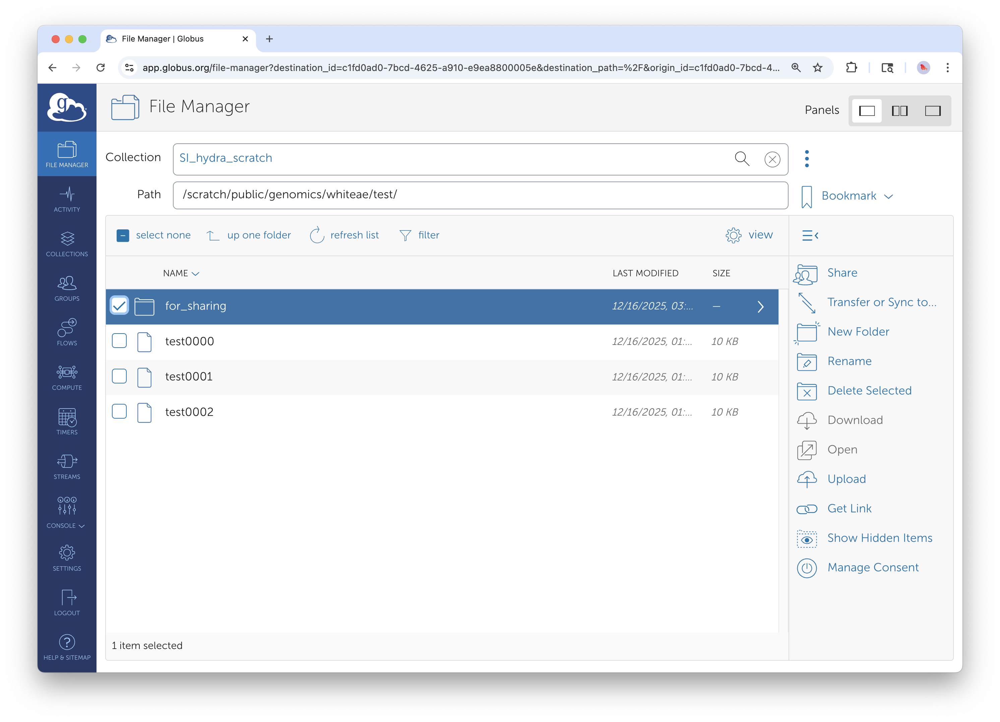
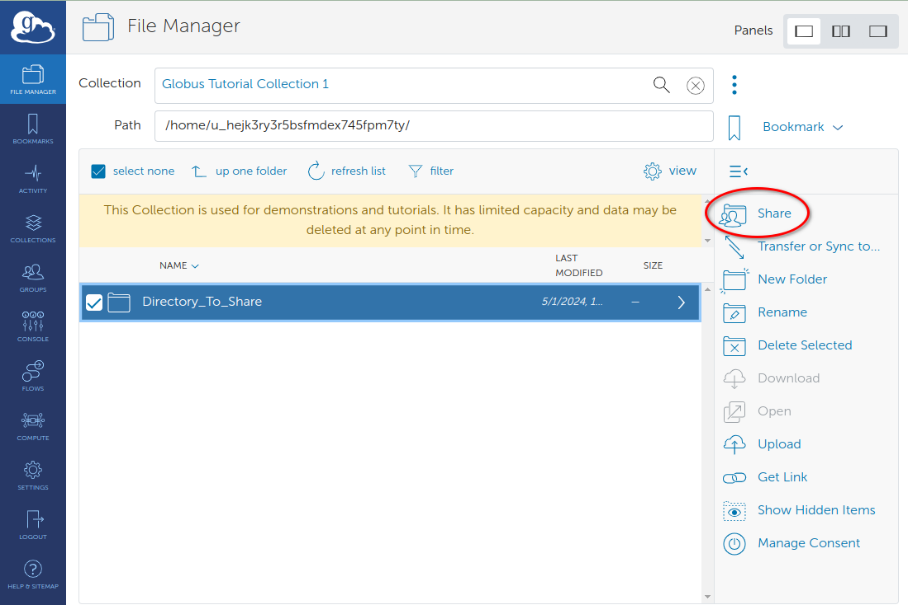
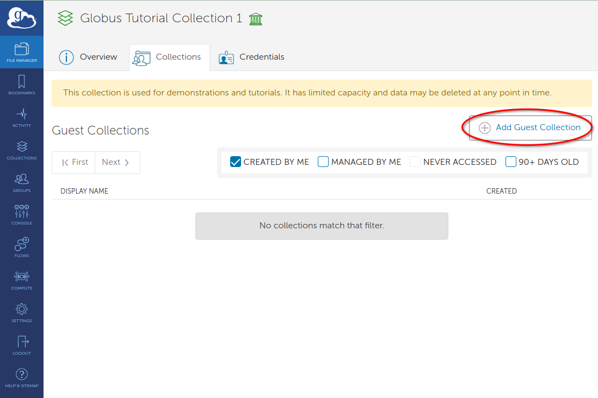
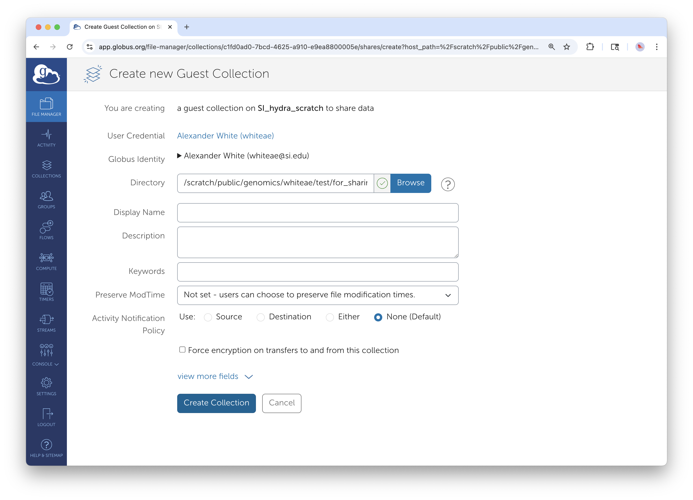
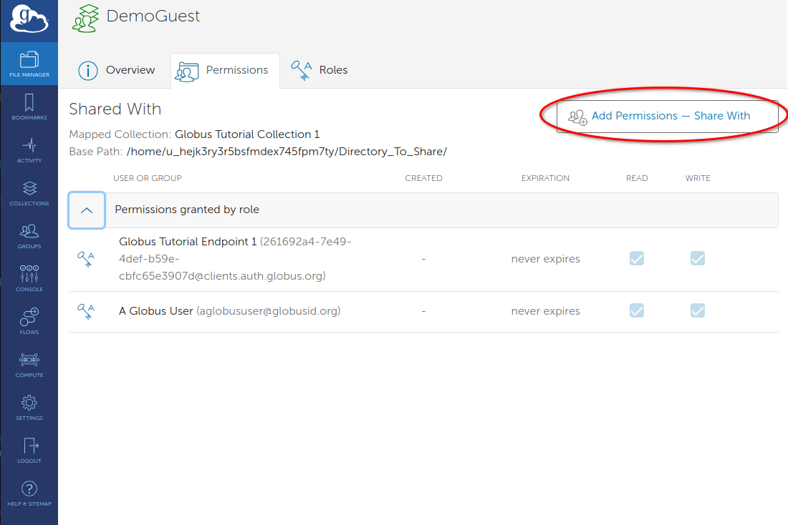
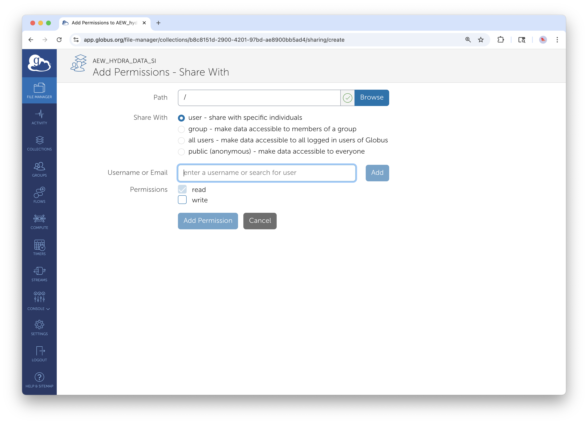

Creating Guest Collections for External Collaboration
Summary
This guide provides step-by-step instructions for Smithsonian staff to create Guest Collections in Globus, enabling secure data sharing with external collaborators who don't have access to Smithsonian storage systems. Guest Collections act as a bridge, using the data owner's credentials to provide controlled access to specific directories.
Example Use Cases
Many Smithsonian staff use Globus to share large datasets with external collaborators, particularly those requiring access to files that are too large for email or cloud storage:
-
A collaborative team at NMNH and STRI uses Globus to transfer pollen images generated on microscopes at NMNH in DC to STRI collaborators in Panama, where they are analyzed and shared with external collaborators who provide taxonomic expertise by annotating the images according to their specialized knowledge of pollen identification.
-
The Center for Conservation Genomics at NZCBI uses Globus to share genomic data externally with research partners around the world.
Globus Access and Account Requirements
TL;DR: Your Smithsonian account gives you access to Globus. To share data, you also need an account on the server where your data lives. When you create a Guest Collection, it uses YOUR server permissions to let external collaborators access your data - they don't need their own server accounts.
| Access Type | What It Provides | Requirements |
|---|---|---|
| Globus Web Application | Interface to manage transfers, view activity, browse collections | Smithsonian network account |
| Creating Guest Collections | Ability to share your data with external collaborators | Smithsonian network account + user account on the specific server hosting your data |
| Accessing Shared Guest Collections | Read/write data in collections shared with you | Globus account only (uses collection owner's server permissions) |
Important Note: While you can access the Globus web application interface with just your Smithsonian network account, you need user accounts on the specific storage systems (Hydra, STRI servers, etc.) to view and work with Collections containing data stored on those systems. Without the underlying storage access, Collections will appear as inaccessible in the Globus interface.
Prerequisites
For Data Owners (Sharing Data)
- [ ] Active Smithsonian network account
- [ ] User account on the server hosting your data:
- Hydra: Request an HPC account on the SI Service Portal
- DAMS NAS Workflows: SI-Globus@si.edu
- STRI users: Contact STRIhelp@si.edu to request Globus Data Transfer Node Server access
- [ ] Data organized in a shareable directory structure
- [ ] Evaluate your data's sensitivity (note: PII should never be transferred using Globus)
For Data Recipients (Accessing Shared Data)
- [ ] Globus account (free institutional or personal account)
- [ ] Valid email address for sharing notifications
Note: Recipients do not need accounts on the underlying storage systems. The Guest Collection uses the data owner's permissions to provide limited access.
Where Is Your Data Right Now?
Before creating a Guest Collection, your data must be on Smithsonian institutional storage, not on your personal device.
| If your data is... | What to do |
|---|---|
| Already on Smithsonian storage (Hydra, STRI servers, DAMS NAS) | You're ready to proceed with this guide |
| On your laptop, workstation, or external hard drive | First transfer it to institutional storage using Guide 3: Globus Connect Personal, then return here |
Why this matters: Smithsonian Data Transfer Nodes are optimized for high-bandwidth transfers. Sharing directly from a personal device would tie up your machine for the duration of every collaborator's download and severely limit transfer speeds. By hosting data on institutional storage, your collaborators get fast downloads and you can close your laptop.
Network Requirements
Once data is deposited in a Smithsonian-managed collection, all Globus actions can be managed from the web application (app.globus.org) without being required to be on the Smithsonian network or VPN.
Creating Your Guest Collection
Think of a Guest Collection as creating a secure "window" into your data. You maintain full control over what's shared and who can access it, while your collaborators can use their existing Globus accounts to access, download, or even upload files to your shared space.
Step 1: Locate Your Data

Access your SI collection through the File Manager interface. Note the "for_sharing" folder selection.
Log into the Globus web interface and navigate to the File Manager. Search for the collection where your data are housed - for example, "SI_hydra_scratch" shown in the interface. Browse to find the directory containing the data you want to share.
The key decision here is choosing the right directory level. You can share an entire project folder or drill down to specific subdirectories. Consider what your collaborators actually need access to - sharing at too high a level might expose data they don't need to see, while sharing too narrowly might require creating multiple Guest Collections later.
Step 2: Initiate Guest Collection Creation

Select the folder you want to share (blue highlighting shows selection) and click the Share button from the action menu on the right.
Once you've located the directory to share, select it using the checkbox. You'll see it highlighted in blue. Click the "Share" button from the action menu on the right side of the interface.
From the sharing options, select "Add Guest Collection." This creates a new access point that external users can connect to, separate from your main Smithsonian collection. Think of this as creating a dedicated "front door" for your collaborators that only opens to the specific data you want to share.

Alternative method: From the collection overview, click 'Add Guest Collection' to begin sharing process.
Step 3: Configure Collection Identity

Configure your guest collection with descriptive information and security settings.
When creating the Guest Collection, you'll configure several important settings:
Display Name: Choose something descriptive. "DemoGuest" works for testing, but for real collaborations, use names like "PollenAnalysisProject2025" or "GenomicsData_SmithLab." Your collaborators will see this name, and it helps them understand what they're accessing.
Description: Explain what the data contains, any important usage guidelines, and perhaps how it relates to your collaboration. For example: "High-resolution pollen microscopy images from Costa Rica field sites. Please download images, add taxonomic annotations to the provided spreadsheet, and return completed annotations via email."
Directory Path: This confirms exactly which directory you're sharing. Double-check this carefully - you can restrict access further later, but you can't expand beyond what you select here without creating a new Guest Collection.
Keywords: Add searchable terms that help with discoverability if you're managing multiple Guest Collections. Terms like your project name, institution names, or data types work well.
Click "Create Collection" to establish the new endpoint.
Step 4: Add Your Collaborators

Access permission management from your newly created guest collection using the "Add Permissions — Share With" button.
Now comes the crucial step of defining who can access your data and what they can do with it. Click "Add Permissions — Share With" to begin configuring access.
Choosing Your Sharing Scope:
Most research collaborations use "User" sharing, where you specify individuals by their email addresses or institutional identifiers. This gives you precise control over who has access.
"Group" sharing works well if your collaborator's institution has pre-defined research groups in Globus, but this is less common for external collaborations.
Do not select "All Users" or "Public".

Configure basic user permissions for root directory access. Note the "user" button selection, Email Notification checkbox, and "Add Permission" button.
Configuring User Permissions:
For each collaborator, you can specify several settings:
Path Access: The default is "/" which gives access to everything in your Guest Collection. However, you can restrict access to specific subdirectories. For example, if your Guest Collection contains both raw data and preliminary analysis, you might give collaborators access only to "/rawdata/" initially, then later grant access to "/analysis/" as the project progresses.
Read vs. Write Permissions: - Read: Allows downloading and viewing files. This is appropriate when you're sharing datasets for analysis. - Write: Allows uploading, modifying, and deleting files. DO NOT ENABLE WRITE ACCESS.
Email Notifications: Enable this and customize the message if desired. Your collaborators will receive an email with instructions on how to access the shared data.
Advanced Access Control:
For enhanced customization, you can limit access to specific subdirectories by changing the Path field from / to /subdir1/ or other specific paths. This is particularly useful when your Guest Collection contains multiple types of data but you only want to share specific portions with certain collaborators.
Managing Ongoing Collaborations
Monitoring Collection Usage
The Activity section shows you what's happening with your shared data - who's downloading what, when transfers occur, and if there are any access problems. This is valuable for understanding how actively your collaboration is proceeding and for troubleshooting if collaborators report problems.
Lifecycle Management
Research collaborations have natural endpoints. When a project concludes, or when certain collaborators no longer need access, remove their permissions through the Permissions tab. This isn't just good security practice - it also helps keep your Guest Collection organized and ensures you're only supporting active collaborations.
Troubleshooting Sharing Issues
Access Problems
Issue: "Access Denied" when accessing shared collection
Verify that read permissions are enabled (checkboxes) and that the collaborator has been properly notified.
- Cause: Permission not properly configured in Guest Collection, or data owner lacks sufficient permissions on underlying storage
- Solution: Verify permission settings in Guest Collection; ensure data owner has appropriate access to shared directories
- Prevention: Test Guest Collection access with known collaborators; verify data owner permissions before sharing
Issue: Collection not visible to collaborator - Cause: Permission not properly configured or email notification not received - Solution: Re-send invitation through permission management; verify user identity - Prevention: Always enable email notifications; test sharing with known users first
Collaboration Best Practices
Data Organization
- Share Only What's Necessary: Limit access to specific directories required for collaboration rather than providing broad access
- Clear Directory Structure: Use intuitive folder hierarchies like shown in the file listings
- Access Boundaries: Use path restrictions to prevent unnecessary directory access
Security Considerations
- Principle of Least Privilege: Grant minimum required access
- Review Collaborator Access: Remove permissions when no longer needed
- Data Sensitivity: Do not share personally identifiable information (PII) or any export controlled data with Globus
Using Globus for Internal Smithsonian Collaboration
While this guide focuses on external collaboration, these same tools and techniques can be used effectively for sharing data between Smithsonian departments, research units, centers, and institutes. Internal collaborations may have simplified account management since all parties already have Smithsonian network access, but the same principles of organized sharing, clear permissions, and proper access management apply.
For Your Collaborators: Accessing Shared Data
Share this section with external collaborators who receive your Guest Collection invitation.
When a Smithsonian staff member shares data with you through Globus, you'll receive an email notification with a link to access the shared files. Here's how to get started:
Step 1: Create a Globus Account (If You Don't Have One)
If you've never used Globus before:
- Go to app.globus.org
- Look for your institution in the organization dropdown—many universities and research institutions are already connected
- If your institution isn't listed, click "Sign in with Google" or "Sign in with ORCID iD" to create a free account
- Complete the brief registration process
If you already have a Globus account through your institution or a previous collaboration, simply log in with those credentials.
Step 2: Access the Shared Collection
- Click the link in the email invitation you received, OR
- Log into app.globus.org, go to File Manager, and search for the collection name provided by your collaborator
You should see the shared files and folders. If you see "Access Denied," contact the person who shared the data—they may need to verify your permissions.
Step 3: Download the Data
Option A: Download to your computer (small files)
For files under a few gigabytes, you can download directly through your browser: 1. Select the files you want 2. Click Download in the right-hand menu
Option B: Transfer to your institution's storage (large files)
For larger datasets, transfer server-to-server for faster, more reliable results: 1. In File Manager, enable the two-panel view (click Panels in the top right) 2. The shared collection should be in one panel 3. In the other panel, search for your institution's Globus collection 4. Select files in the shared collection, then click Start to transfer
Option C: Transfer to your personal computer
If you need large files on your laptop or workstation: 1. Install Globus Connect Personal from globus.org/globus-connect-personal 2. This creates a collection on your personal device 3. Transfer from the shared collection to your personal collection
Need Help?
If you have trouble accessing shared data, contact the Smithsonian staff member who sent the invitation. They can verify your permissions and resend the invitation if needed.
For general Globus questions, visit docs.globus.org or contact your institution's research computing support.
End of external collaborator instructions section.
Support and Additional Resources
Smithsonian Support Contacts
- General Globus Support: SI-Globus@si.edu
- Hydra HPC Support: SI-HPC@si.edu
- DAMS NAS Workflows: SI-Globus@si.edu
- STRI Data Transfer Server: STRIhelp@si.edu
Globus Documentation: Comprehensive platform guides and tutorials
For technical support with Globus collections and data access, contact SI-Globus@si.edu. For questions about account creation or specific systems access, contact the appropriate system administrators listed above.